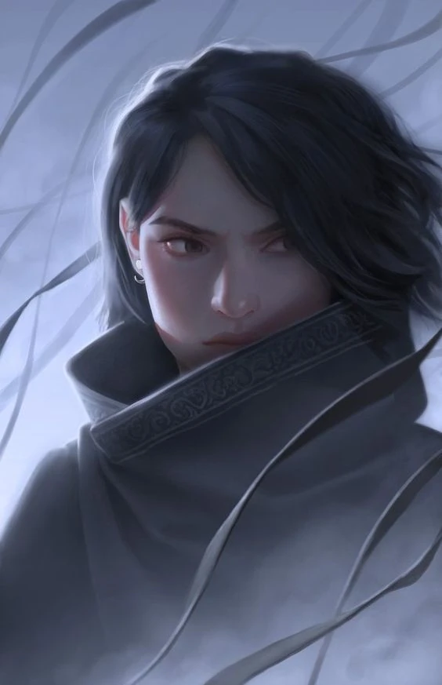
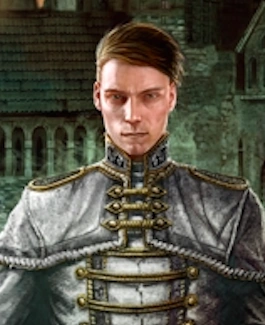
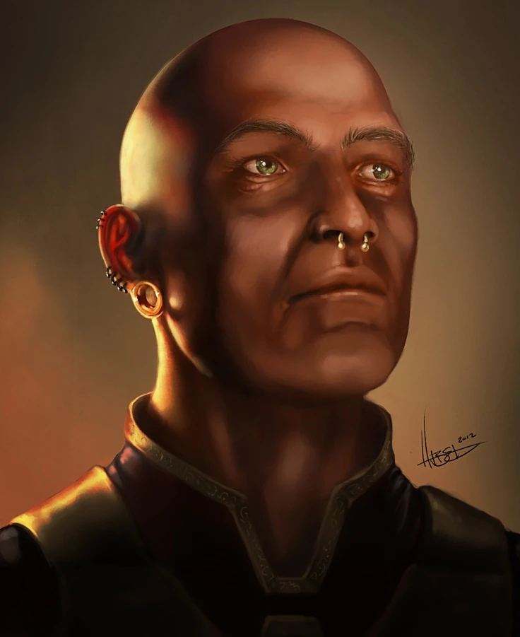
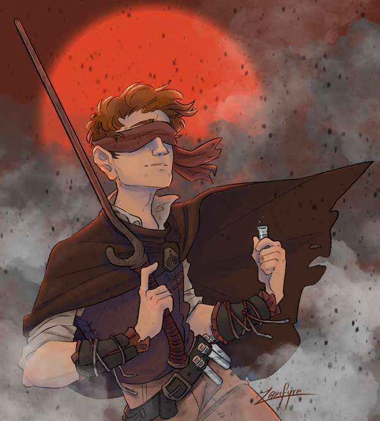
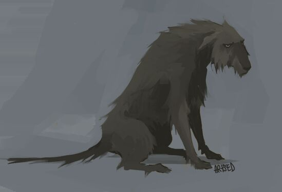
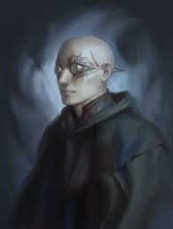

Synopsis
Elend and Vin, now both Mistborn, struggle to hold together their empire while searching for a way to stop Ruin. They follow clues left by the Lord Ruler, discovering storage caches hidden across the land containing food, supplies, and cryptic messages. Each cache brings them closer to understanding what the Lord Ruler knew about Ruin and how he kept the force imprisoned for a thousand years.
TenSoon returns to the kandra Homeland to face judgment for his Contract-breaking, only to find that Ruin has taken control of the kandra through their Hemalurgic Blessings. Meanwhile, Spook leads a resistance in the city of Urteau against a tyrant, struggling with kandra impersonations and his own newfound powers given to him by Ruin's manipulation.
Sazed, devastated by Tindwyl's death, has lost his faith entirely. He travels the land, mechanically collecting and analyzing the religions in his Feruchemical metalminds, trying to find one that makes sense but finding all of them flawed. His crisis of faith becomes central to the story's resolution.
As they piece together the Lord Ruler's clues, they discover the truth: there are two forces, Ruin and Preservation, and they must be balanced. The Lord Ruler was the original Hero of Ages who took Preservation's power but used it to trap Ruin. When Vin released the power at the Well, she freed Ruin. The only way to stop Ruin is for someone to take up Preservation's power— but doing so means becoming something more than human. In the climactic finale, Vin sacrifices herself to combat Ruin directly while Sazed, having finally synthesized all religions into understanding, takes up both powers to become Harmony, reshaping and healing the broken world.
Key Themes
Sazed's journey from believer to skeptic and finally to enlightenment forms the emotional core of the novel. His struggle with faith after loss reflects universal questions about belief, meaning, and finding purpose in suffering. His ultimate synthesis of all religions suggests that truth can be found by understanding multiple perspectives.
Multiple characters make ultimate sacrifices for the greater good. Vin's final sacrifice to stop Ruin mirrors Kelsier's earlier sacrifice, while Elend's death protecting his people completes his transformation from idealist to true leader. The book explores what we're willing to give up to save others and the world.
The revelation of Ruin and Preservation as opposing but necessary forces examines the nature of creation and destruction. The book argues that neither force is purely evil or good—both are needed for existence. Balance, not dominance of one over the other, is the answer to cosmic harmony.
The importance of remembering the past, preserving knowledge, and learning from history permeates the narrative. The Lord Ruler's caches, Sazed's metalminds, and the final revelations all emphasize how crucial it is to understand and learn from what came before.
Major Plot Points
-
The Storage Caches
Elend and Vin discover storage caches hidden by the Lord Ruler across the former empire. Each cache contains supplies and messages encoded in metal, gradually revealing the truth about Ruin, Preservation, and the Lord Ruler's thousand-year plan to save humanity from the inevitable return of Ruin. -
TenSoon's Journey
TenSoon returns to the kandra Homeland to face judgment for breaking his Contract. He discovers Ruin has corrupted the kandra through their Hemalurgic Blessings and fights to free his people. His storyline reveals crucial information about Hemalurgy and the kandra's role in the world's future. -
Spook's Transformation
In Urteau, Spook becomes a hero figure while being manipulated by Ruin (disguised as Kelsier). He gains enhanced tin-burning abilities through a Hemalurgic spike and must choose between the voice in his head and his own judgment. His arc shows the dangers of being controlled by Ruin and the power of making your own choices. -
The Truth About Hemalurgy
The crew discovers that Hemalurgy—the art of stealing powers by piercing people with metal spikes—grants Ruin the ability to control those who have spikes. This explains the Inquisitors' loyalty and reveals that Marsh, now the sole surviving Inquisitor, is under Ruin's complete control despite fighting against it. -
Sazed's Crisis
Throughout his journey, Sazed analyzes every religion he's preserved, finding flaws in all of them. His depression and loss of purpose seem insurmountable until he realizes that by combining the truths from all religions—understanding that each contains part of the greater truth—he can find real faith. -
The Siege of Fadrex City
The final major cache is in Fadrex City, held by King Yomen. Elend must negotiate and eventually besiege the city while fighting off koloss armies controlled by Ruin. The political and military maneuvering here showcases how far Elend has come as a leader. -
The Final Battle and Ascension
Ruin launches his final assault on humanity. Vin discovers she holds a portion of Preservation's power (given when she was stabbed by the mist spirit) and can challenge Ruin directly. Elend dies defending Fadrex City. Vin kills Ruin's body (Marsh) but realizes she must kill herself to destroy Ruin completely, as they're now linked. As Vin and Ruin annihilate each other, Sazed takes up both powers, becoming Harmony. He recreates the world, removing the ash, stabilizing the mists, and setting things right. The trilogy ends with Sazed ensuring that Vin and Elend are reunited in the afterlife, finally at peace.
Key Characters
Vin
Now Empress, Vin fights desperately to save the world from Ruin.
She discovers she carries a portion of Preservation's power and
ultimately sacrifices herself to stop Ruin forever.

Elend Venture
Fully transformed into a warrior-king, Elend leads his empire
against impossible odds. His death protecting his people is the
final step in his journey from idealist to true hero.

Sazed
Wrestling with complete loss of faith, Sazed ultimately becomes
the Hero of Ages by taking up both Ruin's and Preservation's
power, becoming Harmony and reshaping the world.

Spook
Once the crew's young scout, Spook becomes a leader in Urteau.
Manipulated by Ruin but ultimately making his own choices, he
grows into a hero in his own right.

Tensoon
The kandra who broke his Contract to serve Vin returns to save his
people from Ruin's control. His loyalty and courage prove
instrumental in the final battle.

Marsh
The last Inquisitor, controlled completely by Ruin through
multiple Hemalurgic spikes. He fights against Ruin's control
throughout, and his small moment of resistance helps Vin in the
final confrontation.
